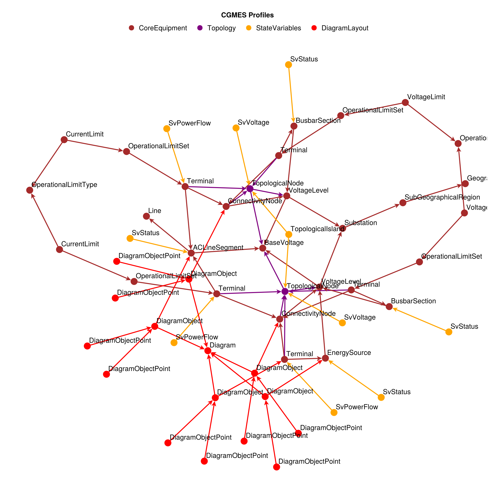
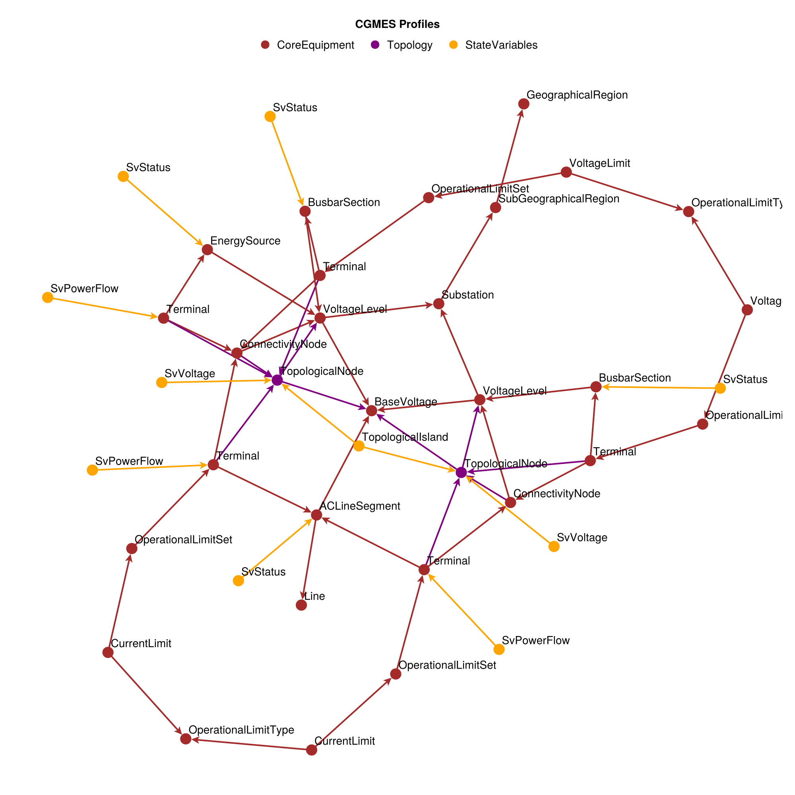
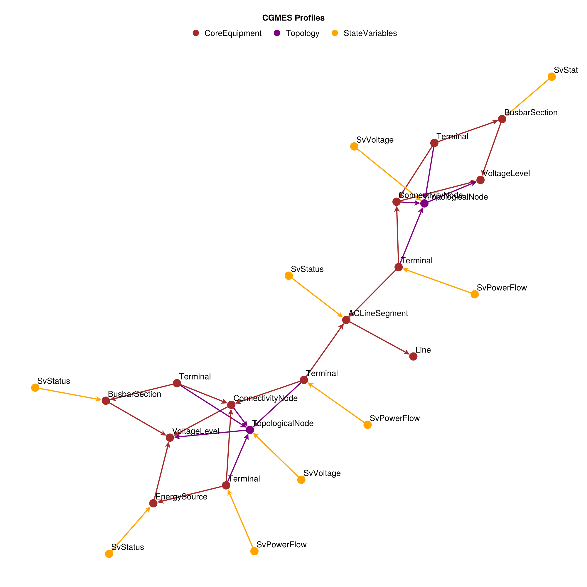
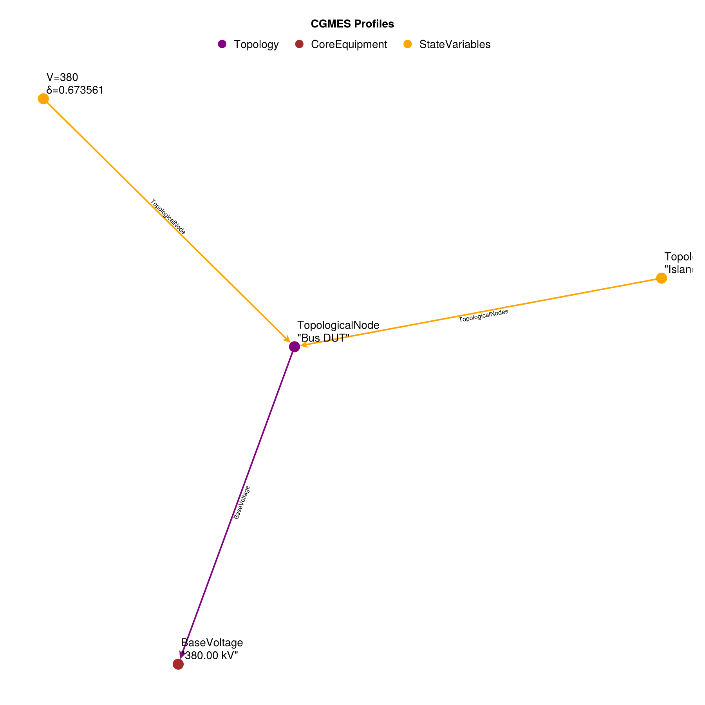
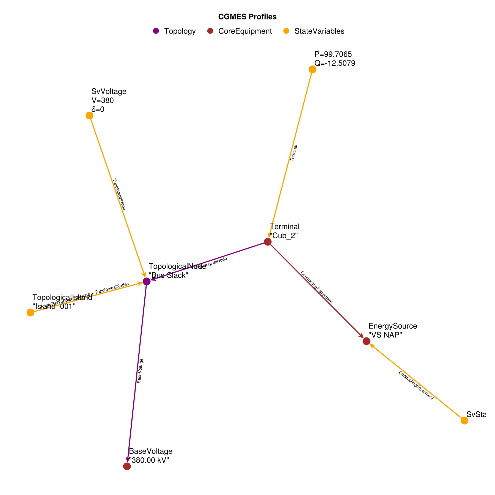
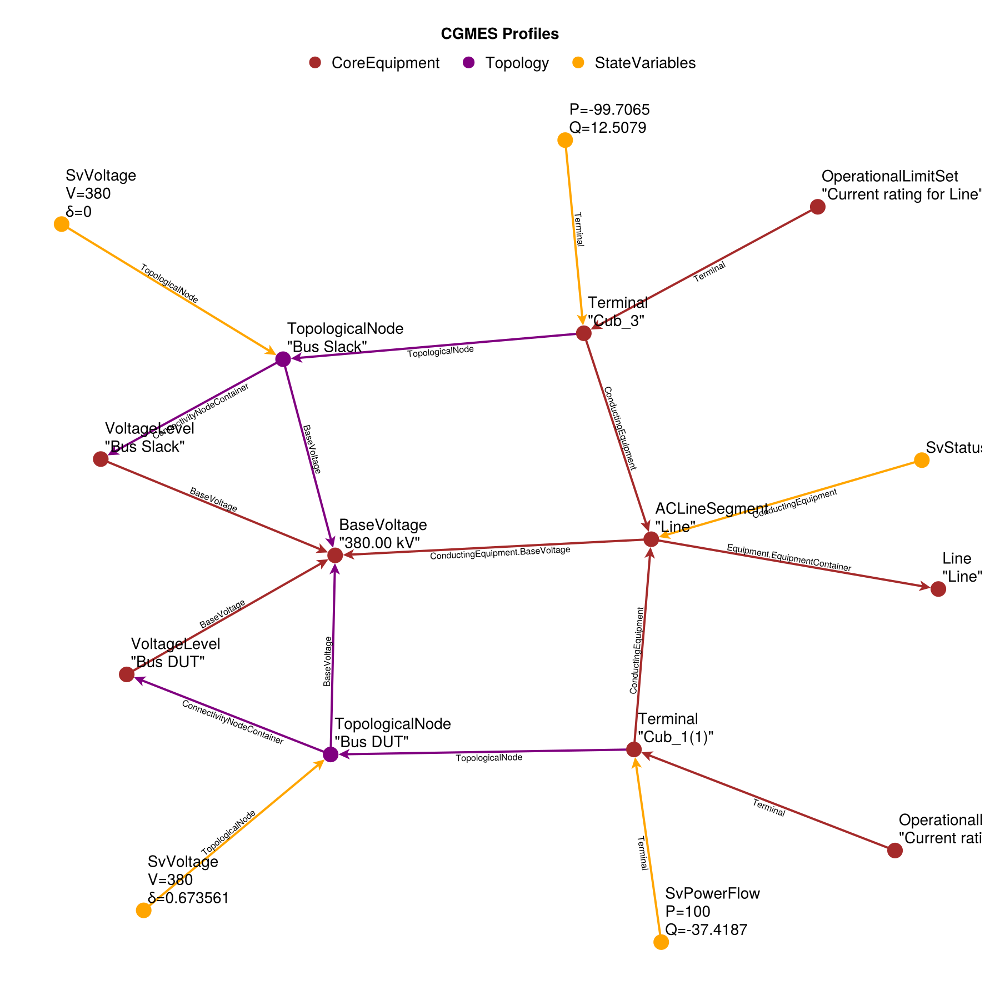

2 Bus Example Export
using PowerDynamics
using PowerDynamics.Library
using PowerDynamicsParsers
using PowerDynamicsParsers.CGMES
using CairoMakieLoad Dataset and Inspect
First wie load the full data set. Consists of lots of files, but most of them are actually empty.
dataset = CIMDataset(joinpath(pkgdir(PowerDynamicsParsers), "test", "CGMES", "data", "simbench_2bus"))CIMDataset: 8 profiles
Directory: /home/runner/work/PowerDynamicsParsers.jl/PowerDynamicsParsers.jl/test/CGMES/data/simbench_2bus
Profiles:
CoreEquipment: 19700102T0656Z__EQ_.xml (28 objects, 0 extensions)
ShortCircuit: 19700102T0656Z___SC_.xml (0 objects, 2 extensions)
Topology: 19700102T0656Z___TP_.xml (2 objects, 7 extensions)
StateVariables: 19700102T0656Z___SV_.xml (10 objects, 0 extensions)
DiagramLayout: 19700102T0656Z___DL_.xml (15 objects, 0 extensions)
SteadyStateHypothesis: 19700102T0656Z___SSH_.xml (0 objects, 13 extensions)
GeographicalLocation: 19700102T0656Z___GL_.xml (0 objects, 0 extensions)
Dynamics: 19700102T0656Z___DY_.xml (0 objects, 0 extensions)
Lets then plot the full dataset. Those are all entities defined in the CGMES data.
inspect_collection(dataset; edge_labels=false, node_labels=:short, size=(1000,1000))
Filtered Dataset and Reduced Complexity
Lets filter out all thos Diagram classes, as they just clutter the view.
We can already see, that we have two TopologicalNodes which will form the Buses in the network later. There isa single ACLineSigment connecting both topoloical busses.
no_diagram = filter(!is_class(r"Diagram"), dataset)
inspect_collection(no_diagram; edge_labels=false, node_labels=:short, size=(1000,1000))
Lets reduce the complexity further by throwing away some more nodes like substations, geographical areas and so on: Now the network structure is more visible, because we have less "non electrical" pathes between the topological nodes.
reduced_dataset = reduce_complexity(dataset)
inspect_collection(reduced_dataset; edge_labels=false, node_labels=:short, size=(1000,1000))
The picture is much clearer now. However there is a problem: there is nothing connected to the busses! The only thing is the "EnergySource", but that thing does not have lots of information either.
only(dataset("EnergySource"))CoreEquipment:EnergySource
Name: VS NAP
ID: _d51849b3-d3db-4cdf-b7d3-48ad5e0bde4e
Profile: CoreEquipment
Properties:
Equipment.EquipmentContainer = @ref CoreEquipment:VoltageLevel (Bus Slack)
mRID = d51849b3-d3db-4cdf-b7d3-48ad5e0bde4e
Extended by ShortCircuit:EnergySource->Extension
r = 0
r0 = 0
rn = 0
x = 0
x0 = 0
xn = 0
Extended by SteadyStateHypothesis:EnergySource->Extension
activePower = 0
reactivePower = 0
voltageAngle = 0
voltageMagnitude = 380
Equipment.inService = true
Referenced by:
CoreEquipment:Terminal (Cub_2) as ConductingEquipment
StateVariables:SvStatus as ConductingEquipment
DiagramLayout:DiagramObject (Grafisches Netzelement98) as IdentifiedObjectTopological Splitting
Eventually, we want to split the dataset into its topological components. We'll use those subgraphs to build bus in edge models.
Bus 1: DUT
nodes, edges = split_topologically(dataset; warn=false, verbose=true);
inspect_collection(nodes[1]; size=(900,900))
Bus 2: Slack
inspect_collection(nodes[2]; size=(900,900))
Powerline from 1 to 2
inspect_collection(edges[1]; size=(900,900))
This page was generated using Literate.jl.